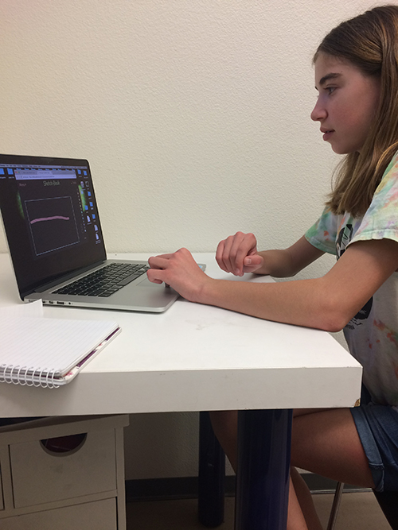

Audence testing was very enlightening and encouraging. It ws great to see members of my target audience interacting with a prototype, and it gave me the impression that I am on the right track with this project. After three users tested my Prototype 3, I have some ideas for both short-term and long term improvement.
While playing in the Sketch Book page, I got some good ideas for how to flesh out the drawing tools. First, the users said that it would be helpful to highlight whichever color and size are currently being used, so that they don't have to draw something in order to find out what is loaded onto the cursor. They also said that despited the erasor, they might like to have an undo and redo option. One user, Mara, also noticed that the frame of the canvas can be erased, so I made a not to move the frame outside of the Canvas area. These are all minor fixes that I can make to improve the functionality of the sketch book.
I noticed that all three users chose to go to the sketch page first, instead of choosing to "view portfolios" from the home page. The buttons are identical besides the words inside them, so it seems that the prospect of making something is more exciting. While this is an encouraging instinct, I am now considering that the website should open to a page of portfolios as the home page. It would have a button to go to the sketch page, but would prevent users from bypassing exploring others' work. Though each user went to the sketch book first. Natalie, pictured below, is the only user who knew what what to draw. Natalie played with the sketch book, then looked at portfolios, and finally went back to the sketch book and drew a house. The other user only played with how the colors and sizes function. I think eliminating the option to skip viewing portfolios would prevent the hesitation that kids might feel when staring at a blank canvas. Doing this would take some work with reorganizing the way the site flows and the page set up and layout, but it is definitley something to consider as I move forward with the project.
